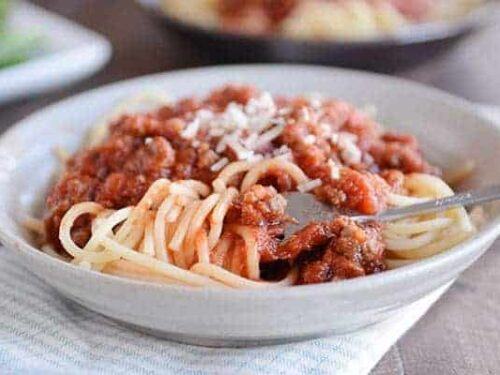

<!DOCTYPE html>
<html lang="en">

</html>
<head>
    <meta charset="UTF-8">
    <title>Spaghetti and Sauce Recipes</title>
</head>
<body> 

<a href="../index.html">HOME</a>
<h1>Spaghetti and Sauce Recipes</h1>


<p><h2>Descriptions</h2></p>

<p>A classic, simple pasta dish with a rich tomato sauce, perfect for a quick and satisfying meal.</p>
<p><h3>Ingredients</h3></p>
<ul>
    <li>200g spaghetti</li>
    <li>2 tbsp olive oil</li>
    <li>2 cloves garlic (minced)</li>
    <li>1 can (400g) crushed tomatoes</li>
    <li>1 tsp dried oregano or basil</li>
    <li>Salt and pepper to taste</li>
</ul>
<p><h3>Steps</h3></p>


</body>